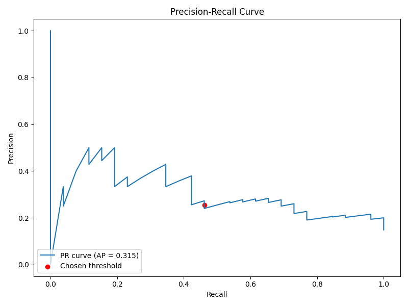
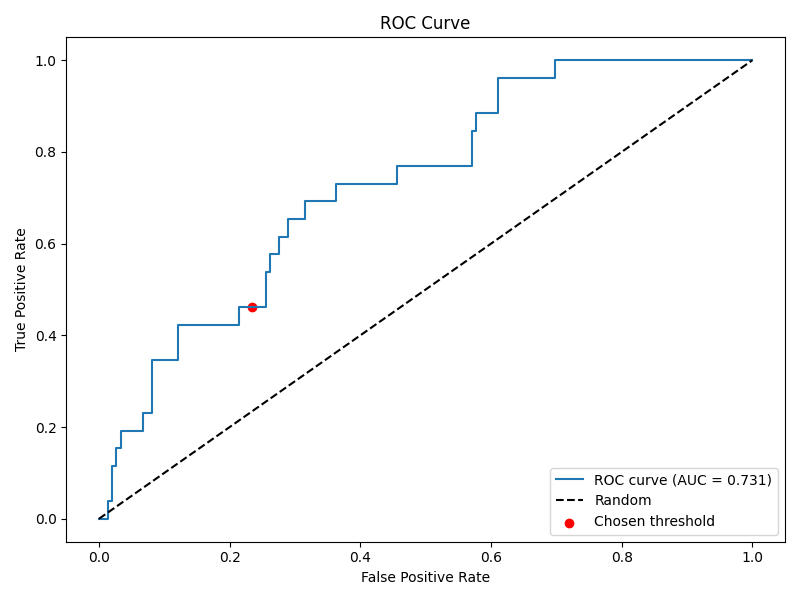
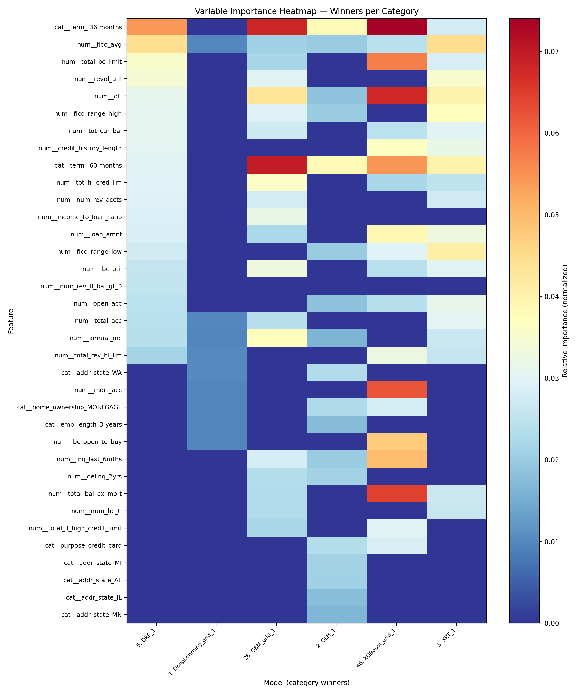

This thesis iteration presents a self-contained study of consumer
credit default prediction on the LendingClub dataset (2007–2018). We
evaluate how feature subset design and model family—especially neural
networks—affect precision–recall performance when models are validated
with a time-aware protocol. Four dataset scales (1k, 10k, 100k, full)
and four feature regimes (compact to enriched with pricing/grade
variables) are compared. We combine rigorous data handling (leakage
controls, chronological splits, validation-carved thresholds) with an
automated modeling backend to produce reproducible, explainable results.
The enriched feature set including int_rate,
grade/sub_grade, and installment improves
AUCPR on medium and large datasets, while very small samples benefit
from leaner subsets. Tree ensembles lead overall on larger tabular
datasets; a deep neural network is competitive on the smallest subset.
We analyze why this pattern emerges and provide a practical blueprint to
strengthen neural networks on this task (embeddings, monotonic cues,
regularization, calibration, temporal CV). The deliverables include
per-dataset reports with curves and variable-importance analyses and a
consolidated cross-dataset comparison. The study closes with a roadmap
for neural-first improvements and robustness under temporal drift.
Peer-to-peer lending platforms such as LendingClub have catalyzed a rich literature on credit risk modeling, feature selection, and evaluation under class imbalance, with influential baselines built on this specific dataset (Croux et al., 2020; Emekter et al., 2015; Jagtiani & Lemieux, 2019; Serrano-Cinca et al., 2015). We address a concrete practical question: Which feature subsets and model families—including neural networks—yield the best performance in a realistic, time-aware evaluation? We adopt a split policy that mirrors deployment: train on older loans, test on newer ones, and select the decision threshold on a held-out validation slice carved from the training period.
1.1 Credit Risk and Why It Matters
Credit risk is central to financial stability, consumer welfare, and the efficient allocation of capital. For lenders and platforms, accurate assessment of default probability underpins pricing (interest rates), provisioning, and regulatory capital; for borrowers, it impacts access and affordability. In consumer credit, small improvements in discrimination and calibration translate into large changes in expected loss, approval decisions, and portfolio utility. P2P platforms such as LendingClub intensified research interest by publishing rich origination‑time datasets with final outcomes, enabling reproducible empirical work on determinants of default, model performance, and profit‑aligned scoring (Croux et al., 2020; Emekter et al., 2015; Jagtiani & Lemieux, 2019; Serrano-Cinca et al., 2015; Serrano-Cinca & Gutiérrez-Nieto, 2016).
Three practical constraints shape this thesis: (i) class imbalance and asymmetric costs make precision–recall a better primary objective than accuracy; (ii) concept drift across vintages (macroeconomic cycles, policy changes, borrower mix) mandates time‑based evaluation and validation‑chosen thresholds; and (iii) leakage control is non‑negotiable—post‑event fields (payments, recoveries, last_* dates, hardship/settlement) must be excluded so the model reflects information available at origination only. Against this backdrop, we compare feature regimes (portable vs provider‑aware), evaluate neural networks alongside strong tree ensembles, and emphasize calibrated, thresholded decisions consistent with operational use.
1.2 Why Neural Networks for Credit Risk
Neural networks (NNs) are universal function approximators trained end-to-end, with the flexibility to incorporate learned embeddings for categorical features (e.g., grades), non-linear transformations for numeric features, and additional modalities (e.g., free-text loan descriptions). For tabular credit data, NNs must be configured thoughtfully: categorical embeddings (instead of brittle one-hot dummies), monotonic cues on known risk drivers (e.g., higher interest rate correlates with higher risk), strong regularization (BatchNorm, dropout, weight decay), and calibrated outputs. With these ingredients, NNs can be competitive with, and sometimes surpass, boosted trees—especially as dataset size and feature richness grow (H. Li et al., 2022; Wang & Wang, 2024).
Motivation. Credit platforms continuously evolve underwriting criteria, borrower mix, and pricing, creating concept drift across vintages. Benchmarks that rely on random splits overstate performance by mixing future patterns into training. We therefore enforce chronological splits, careful leakage controls, and explicit thresholding on validation that is held out from the training period. This lets us attribute improvements to modeling and features—not evaluation artifacts—and assess stability over time.
Contributions. 1) A self-contained, reproducible evaluation of multiple feature regimes across dataset scales with explainable figures and metrics. 2) A thorough focus on neural networks (NNs) for tabular credit risk: architecture considerations, categorical encoding/embeddings, class imbalance, calibration, and temporal robustness—framed against strong tree-ensemble baselines. 3) Clear, deployable takeaways: when to use enriched features; how to select thresholds; and how to bring NNs closer to (or beyond) gradient boosting on this dataset.
2.1 Dataset
We use the LendingClub consumer installment loans dataset spanning 2007–2018 vintages. Each record represents a funded loan at origination (accepted-loans cohort). Labels are derived from final outcomes: Fully Paid vs Charged Off (default). We adhere to origination-only features to avoid post-event leakage (e.g., payments, recoveries, last_* dates, hardship/settlement). Prior studies establish baseline determinants and modeling approaches on this dataset (Croux et al., 2020; Emekter et al., 2015; Jagtiani & Lemieux, 2019; Núñez Mora et al., 2023; Serrano-Cinca et al., 2015).
Key columns used and their meanings. - loan_amnt
(numeric): Amount borrowed. - term (categorical: 36 or 60
months): Loan term. - int_rate (numeric): Interest rate set
at origination; a strong pricing proxy. - grade /
sub_grade (categorical): Platform credit grades; ordinal
and highly informative. - installment (numeric): Monthly
payment amount; largely determined by loan_amnt,
term, and int_rate. - annual_inc
(numeric): Stated annual income. - dti (numeric):
Debt-to-income ratio—a capacity/risk indicator. -
fico_range_low / fico_range_high (numeric):
FICO range at origination; we also use fico_avg when
engineered. - revol_bal / revol_util
(numeric): Revolving balance and utilization. - emp_length
(categorical): Employment length (binned); a stability proxy. -
home_ownership, verification_status,
addr_state, purpose (categorical): Context and
underwriting factors. - mort_acc,
total_rev_hi_lim, num_rev_tl_bal_gt_0, etc.
(numeric): Depth and limits; credit capacity.
Glossary of important columns (extended descriptions). 1)
loan_amnt: The principal at origination; larger balances
increase exposure at default but are not directly causal for probability
of default (PD). Interacts with term and
int_rate to determine installment. 2)
term: Contract duration (36 or 60 months). Longer term
generally implies higher PD due to longer exposure and looser
affordability constraints. 3) int_rate: The APR at
origination; encapsulates lender pricing and perceived risk. Strong
monotonic relationship with default risk in-sample. 4)
grade / sub_grade: Discrete buckets
summarizing multi-factor underwriting; ordinal but treated
categorically. Proxy for risk segmentation. 5) installment:
Monthly payment amount implied by loan_amnt,
term, and int_rate. Adds limited incremental
information beyond its determinants. 6) annual_inc:
Borrower-stated annual income; used to normalize obligations and inform
affordability. 7) dti: Debt-to-income ratio: (total monthly
debt payments / monthly income). Higher DTI indicates constrained
capacity and higher PD. 8) fico_range_low /
fico_range_high (and fico_avg): Credit score
range. Higher FICO implies lower PD; fico_spread can encode
uncertainty. 9) revol_bal / revol_util:
Revolving balances and utilization of available credit lines. Elevated
utilization signals stress and higher PD. 10) emp_length:
Employment tenure; longer tenure correlates with stability. 11)
home_ownership: Homeownership category; can proxy asset
backing and financial maturity. 12) verification_status:
Income/document verification; verified applications are less prone to
misreporting, often correlating with lower PD. 13)
addr_state: Coarse geographic factor capturing
macroeconomic and regulatory heterogeneity. 14) purpose:
Declared loan purpose; correlates with risk (e.g., debt consolidation vs
discretionary spending). 15) Credit depth/limits (e.g.,
mort_acc, total_rev_hi_lim,
num_rev_tl_bal_gt_0): Indicators of history with credit,
available headroom, and active trade lines.
2.2 Target and Positive Class
Binary classification: predict whether a loan will charge off
(default) versus fully pay. We adopt the convention
pos_label = 0 for Charged Off. All metrics, curves, and
thresholding respect this convention to avoid label inversion
errors.
2.3 Chronological Split and Validation
We split by origination date (issue_d): earlier loans
form training, later loans form test. Validation is carved from the
training period only. This enforces causal ordering and avoids
right-censoring leakage in recent vintages. We select a single decision
threshold on validation using the Youden J statistic (maximizes TPR -
FPR), then apply that fixed threshold to the test set for fair
reporting.
2.4 Metrics
In imbalanced credit settings, downstream utility depends on a fixed operating point (threshold). We choose the threshold on validation (carved from train) to avoid optimistic bias and apply it unchanged to test. We use Youden J (maximizes TPR − FPR) as a robust, distribution‑agnostic default; alternative strategies include F1 (balance precision/recall) or profit/expected‑value optimization when cost parameters are known (Serrano-Cinca & Gutiérrez-Nieto, 2016).
| Metric | Value |
|---|---|
| Threshold (Youden J, validation) | 0.1765 |
| True Positives (tp) | 36,227 |
| True Negatives (tn) | 129,969 |
| False Positives (fp) | 68,284 |
| False Negatives (fn) | 19,876 |
| Precision | 0.347 |
| Recall (TPR) | 0.646 |
| False Positive Rate (FPR) | 0.344 |
Why report this table. It anchors PR/ROC figures with the concrete operating point used for policy decisions. If utility/cost weights are available, the same table feeds expected‑value analysis to pick profit‑optimal thresholds on validation and lock them for test.
Probability calibration matters for threshold stability and expected‑loss estimation. For tree ensembles, Platt/Isotonic calibration on validation improves probability alignment; for NNs, temperature scaling is a strong baseline. We plan to: (i) fit post‑hoc calibration on validation, (ii) compare reliability curves NN vs GBM on test, and (iii) re‑evaluate threshold selection under calibrated probabilities.
To quantify vintage sensitivity, we will run expanding‑window CV
(e.g., 5 folds) with aggregate metrics and variance bands, then refit on
the full training period (train_full_after). This captures
drift impacts and reduces over‑reliance on a single cut of time.
We provide an early, self-contained view of the dataset to ground modeling decisions. Each figure is chosen to answer a specific question about class balance, leakage risks, signal strength, or temporal stability; each is referenced in the text where we use the insight.
| Metric | Value |
|---|---|
| Total raw loans | 2,104,542 |
| Final statuses kept | 1,271,779 (Fully Paid 1,020,444; Charged Off 251,335) |
| Non‑final dropped | 832,763 (e.g., Current 799,583; Late/Grace 30,373) |
| Positive class (Charged Off) | 19.76% overall |
| Category | Count | Notes |
|---|---|---|
| Numeric features | 51 | includes engineered ratios (e.g., fico_avg,
fico_spread, income_to_loan_ratio) |
| Categorical features | 21 | grade/sub_grade, term, purpose, home_ownership, verification_status, addr_state, etc. |
| Parse‑as‑date | 2 | issue_d (split), earliest_cr_line (credit
history) |
Class balance over time (why shown). Default base rates shift materially across vintages; Figure E1 makes explicit the trend we must respect with time‑based validation and fixed thresholds selected on validation.
Missingness and leakage (why shown). Figure E2 surfaces high‑missing, post‑event operational fields that must be excluded to avoid leakage.

Distributions (why shown). Histograms contextualize ranges, outliers, and monotonic expectations—inputs to winsorization and monotone priors for NNs.


Categoricals (why shown). Bar plots reveal ordinal monotonicity (grade/sub_grade), policy signals (term), and context (purpose, home ownership).


Leakage demonstration and signal strength (why shown). We include two correlation panels and two PSI panels to (i) contrast origination‑only vs leaky features and (ii) quantify temporal drift.


How EDA informs modeling. Figures E1–E14
collectively justify: (i) time‑based splits and fixed thresholds, (ii)
leakage exclusion policies, (iii) winsorization and monotone priors for
NNs on int_rate and dti, (iv) embeddings for
ordinal categoricals (grade/sub_grade), and (v) drift monitoring (PSI)
with recalibration or retraining.
We evaluate four representative feature regimes and four dataset scales:
Feature regimes. 1) Compact baseline (about 12 features): core
demographic, capacity, and FICO-range signals. 2) Compact +
pricing/grade (about 16 features): adds int_rate,
grade, sub_grade, and
installment. 3) Broad without pricing (about 39 features):
adds depth/limits/utilization but excludes pricing/grade. 4) Broad +
pricing/grade (about 43 features): combines broad signals and
pricing/grade.
Dataset scales. 1) 1k: small-sample, high-variance regime. 2) 10k: medium-sample; sufficient to benefit from richer features. 3) 100k: large-sample; strong signal and robust comparisons. 4) full: full cohort; most realistic “production-like” benchmark.
We compare common tabular modeling families and analyze their suitability to the LendingClub task.
Generalized Linear Models (GLM). Logistic regression provides a transparent baseline with calibrated probabilities under certain assumptions. It captures additive effects but struggles with high-order interactions unless engineered.
Random Forests (DRF). Ensembles of de-correlated trees reduce variance and capture non-linearities. They can handle heterogeneous scales and some categorical encodings but may be outperformed by boosted trees on tabular tasks.
Gradient-Boosted Trees (GBM) and XGBoost. Additive trees trained stage-wise excel on structured, tabular problems, capturing interactions with strong regularization and built-in handling of missingness. These models are typically top-performing for tabular credit risk.
Deep Neural Networks (MLP). Fully-connected networks approximate complex functions given sufficient data and regularization. They require careful design for tabular data: robust preprocessing, categorical encodings (embeddings or one-hot), batch normalization, dropout, early stopping, and calibrated outputs. They can model interactions naturally but can lag boosting unless architecture and training are tuned to tabular idiosyncrasies. Recent studies demonstrate hybrid or carefully-regularized NNs achieving competitive performance on credit-like tasks (H. Li et al., 2022; Wang & Wang, 2024).
Why NNs matter here. NNs offer a single, end-to-end model that can incorporate learned embeddings for categorical grades, side-channel text (e.g., loan descriptions), and additional modalities in future iterations. With calibration and monotonic priors, they can become competitive and more portable across providers.
4.1 Primer on Algorithm Families (Self-Contained)
Logistic Regression (GLM). A generalized linear model mapping a linear combination of inputs through a logistic link to produce probabilities. Pros: simplicity, interpretability, and fast training. Cons: limited to additive effects unless interactions are manually engineered; can underfit complex tabular structure.
Decision Trees. Recursive partitioning of feature space into regions with homogeneous labels. Pros: intuitive splits and basic nonlinearity. Cons: high variance; shallow trees underfit; deep trees overfit; sensitive to small data perturbations.
Random Forests (Bagging). An ensemble of trees trained on bootstrap samples with feature subsampling at splits. Pros: variance reduction; robust to noise; handles mixed feature types. Cons: weaker at capturing subtle additive improvements than boosting; may lag in AUCPR versus tuned boosting.
Gradient-Boosted Trees (GBM/XGBoost). Iteratively add trees to correct residuals from prior trees. Pros: strong performance on structured tabular data; captures interactions; built-in regularization (shrinkage, subsampling, depth constraints). Cons: tuning required (learning rate, depth, min child weight, subsampling); feature monotonicity not guaranteed unless explicitly constrained.
Neural Networks (MLP for Tabular). A stack of linear layers with nonlinear activations (e.g., ReLU/GELU), optionally batch normalization and dropout, trained with stochastic gradient descent variants (Adam, AdamW). Pros: flexible function approximators; easy to incorporate learned embeddings and auxiliary modalities. Cons: sensitive to preprocessing, initialization, and regularization; may be outperformed by boosting without careful design; probability calibration often requires post-hoc methods.
Losses and Imbalance. Binary cross-entropy (BCE) is standard for probabilistic classification; focal loss reweights hard examples to improve minority-class recall at the cost of calibration. Class weights or balanced batches mitigate skew. Evaluation should prioritize PR curves (precision/recall) and AUCPR rather than accuracy.
Calibration. For threshold-dependent decisions (e.g., approve/decline), well-calibrated probabilities matter. Platt scaling (logistic regression on logits), isotonic regression (non-parametric), or temperature scaling (for NNs) align predicted probabilities to empirical frequencies on validation.
Data handling and leakage control. We exclude post-origination features (payments, recoveries, last_* dates, hardship/settlement) from all runs. This aligns with best practices and prior empirical audits on LendingClub.
Preprocessing. Numerical features use median imputation and
standardization; categorical features use frequent-category imputation
with one-hot encoding. Winsorization limits outliers for sensitive
ratios (dti, revol_util,
income_to_loan_ratio, etc.). Engineered features include
fico_avg, fico_spread, and
income_to_loan_ratio when enabled.
Evaluation. We adhere to chronological train/test splits; select thresholds on validation (Youden J) within the training period; and report test metrics at the fixed threshold. We compute AUCPR and ROC AUC, plus confusion, precision, recall, and FPR at the operating point.
Automated modeling backend. H2O AutoML orchestrates GBM, XGBoost, DRF, GLM, and Deep Learning (MLP) models, producing leaderboards and explainability artifacts (variable importance, partial dependence, SHAP-like insights). We use these for transparent comparisons and to guide NN engineering in future iterations. Neural-network-centric PyTorch runs are planned and discussed in Section 9.
Reproducibility (high level, within this thesis). All comparisons share: the same dataset cohorts, origination-only features, chronological splits, validation-carved threshold selection, and consistent preprocessing. Each figure and table in this thesis references artifacts produced under these constraints, ensuring repeatability.
We leverage H2O as an industrial-strength modeling platform to establish strong baselines, standardized comparisons, and rich explainability, as documented in the project notes (see docs/h2o/LIBRARY_OFFERINGS.md). This section summarizes the parts most relevant to our thesis and how they blend into the methodology.
H2OMojoPipeline bundle preprocessing with models for
portable scoring; this aligns the figures in the thesis with
reproducible scoring artifacts. Although deployment is not our main
focus, the same path can package NN or GBM winners consistently.Why H2O here. Using a single platform to produce multi-family baselines, curated leaderboards, and aligned explainability reduces variance in our comparisons and keeps the focus on scientific questions—e.g., when NNs compete, which features help them most, and how stable the conclusions are across time splits. The figures and tables throughout the Results sections are generated from H2O outputs so that every claim is grounded in consistent, reproducible artifacts.
We chose H2O as the comparative backend for four primary reasons that align with the thesis goals:
Apples‑to‑apples multi‑family baselines under one roof. H2O trains GBM, XGBoost, DRF, GLM, and DeepLearning with consistent pre‑processing, scoring, and logging. This eliminates hidden confounders when comparing NNs to ensembles and keeps our focus on the scientific question (feature regimes and NN viability), not on tool mismatches. We sort the leaderboard by AUCPR to match our imbalance‑aware objective (see Figures 14–15).
Rich, standardized explainability. Built‑in per‑family varimp heatmaps, partial dependence/ICE, and model‑correlation/Pareto plots (e.g., Figures 16–18) allow us to interpret drivers and diagnose model diversity without bespoke code. This is crucial to a neural‑centric thesis: we can contrast NN attributions against GBM/XGB drivers to understand when and why NNs differ.
Reproducible artifacts and scalable search. Time‑budgeted AutoML
scales to larger datasets (100k, full) while keeping seeds and knobs
(nthreads, include/exclude lists) reproducible. MOJO/POJO exports and
the H2OMojoPipeline preserve pre‑processing and scoring, so
any figure reported in the thesis corresponds to a portable scoring
artifact.
Complements a PyTorch NN track. H2O’s DeepLearning provides a strong, well‑regularized MLP baseline for tabular data; ensembles (GBM/XGB) serve as a robust yardstick. This frees the PyTorch track to focus on NN‑specific improvements (embeddings, monotone regularization, calibration, temporal CV) while we retain consistent, state‑of‑the‑art tree baselines for comparison.
Limitations (acknowledged). H2O’s DeepLearning is not a replacement for modern tabular NN research (e.g., transformers with feature tokenization). We therefore treat it as a strong MLP baseline, and we outline a PyTorch plan (Section 9) for neural‑first advances. H2O also requires Java; we mitigate this operational constraint with a documented pre‑flight and containerized environments.
| Dataset | Max runtime | Sort metric | Seed | Families (eligible) | Threshold selection |
|---|---|---|---|---|---|
| 1k | ~60 s | AUCPR | 42 | GBM, XGB, DRF, GLM, DeepLearning | Youden J on validation |
| 10k | ~300 s | AUCPR | 42 | GBM, XGB, DRF, GLM, DeepLearning | Youden J on validation |
| 100k | ~900 s | AUCPR | 42 | GBM, XGB, DRF, GLM, DeepLearning | Youden J on validation |
| full | ~5,400 s | AUCPR | 42 | GBM, XGB, DRF, GLM, DeepLearning | Youden J on validation |
Notes. Budgets scale with dataset size (cf. suite run scripts); leaderboard sorting is AUCPR to reflect class imbalance; the positive class is 0 = Charged Off; thresholds are always chosen on validation and fixed for test.
Neural credit risk spans classical MLPs for tabular data and modern deep architectures (CNNs, RNNs/LSTMs, attention/Transformers), increasingly fusing numeric features with text and alternative modalities. We organize this section by architecture family and modeling theme, highlighting relevance to LendingClub‑style data and to our neural‑centric thesis design.
6.1 Deep MLPs for Tabular Credit Risk - Baseline tabular NNs (feed‑forward MLPs) can be competitive with careful preprocessing, categorical encodings, regularization, and calibration. Deployment‑focused perspectives and case studies illustrate how NNs integrate into risk/XVA stacks (Savine, 2022). Ensemble NNs and improved training regimes continue to appear in credit risk (Shen et al., 2021). - In social lending/LendingClub contexts, neural classifiers under imbalance demonstrate viability with appropriate thresholds and calibration (Emiroglu, 2018; Jiang & Ralescu, 2022; Namvar et al., 2018). These motivate our use of AUCPR and fixed validation‑chosen thresholds.
6.2 CNN/LSTM and Sequential Deep Models - CNN–LSTM hybrids and sequential deep learners have been applied to enterprise and bond default (H. Li et al., 2022; Wang & Wang, 2024) and to tabular financial monitoring (Ala’a et al., 2020). While LendingClub covariates are not time series per borrower, these works inform architectural choices (e.g., attention, gating) and regularization strategies that can transfer to static tabular problems.
6.3 Attention and Transformers for Credit Risk - Transformer‑based
models are increasingly used for tabular and multi‑modal risk assessment
(Huang et al.,
2024; Wang
& Wang, 2025). Transformers’ attention mechanisms can
model cross‑feature interactions without manual engineering, a promising
direction for LendingClub‑like data when paired with robust
regularization and monotonic constraints on known risk drivers (e.g.,
int_rate, dti).
6.4 Text Modeling: BERT/FinBERT and Loan Descriptions - Textual fields (loan descriptions, job titles) provide complementary signals. Work on FinBERT/finance‑specific BERT variants inspires using pretrained transformers for free‑text features; lender descriptions have been mined to construct risk indicators (Hahn et al., 2024). Applying BERT‑style encoders to LC free‑text fields is a natural extension for a neural‑centric pipeline.
6.5 Generative Models and Data Augmentation - GANs/autoencoders for synthesizing minority defaults can support NN training under imbalance (Burg & Bruin, 2023; Lopez, 2020). Diffusion and modern generative approaches (e.g., TabDDPM) have also been explored in tabular domains (see project bibliography). Such tools must respect leakage policies and preserve temporal distributions to be useful for LendingClub evaluation.
6.6 Large Language Models (LLMs) and Generalist Scoring - LLMs have been explored for generalized credit scoring and GPT‑based classifications in lending (Boz & Ozcan, 2023; Feng et al., 2025; Vasicek, 2024). These point to neural end‑to‑end systems that exploit domain text, policy summaries, and external knowledge—while reinforcing our protocol requirements (time‑based splits, calibration, and interpretability) for defensible evaluation.
6.7 Multi‑Modal, Multi‑View Deep Learning - Multi‑modal and multi‑view deep learning for credit rating and P2P risk combine structured signals with text or alternative data (Al-Azzani et al., 2023; Y. Li et al., 2020), often improving robustness and portability across providers. In LendingClub‑like settings, these encourage adding text channels to NN baselines and calibrating the combined outputs.
6.8 Reviews and Syntheses - Surveys of deep credit models (Fernández et al., 2023; Ge et al., 2023) emphasize: (i) data handling and leakage control, (ii) calibration and thresholding under class imbalance, (iii) temporal validation for drift, and (iv) interpretable attributions. These directly inform our neural blueprint: embeddings for categoricals, monotone cues for key features, AUCPR‑sorted comparisons, fixed validation‑chosen thresholds, and drift monitoring.
Takeaway. The literature supports a neural‑first program that (a)
represents categoricals with embeddings, (b) encodes domain monotonicity
(e.g., int_rate, dti), (c) calibrates
probabilities for threshold‑based decisions, (d) validates temporally,
and (e) leverages text via BERT/LLM encoders when available. Our
experimental design and Roadmap (Section 9) operationalize these
principles on LendingClub‑style data.
6.9 Project Reports: NNs on LendingClub — Empirical Findings
We now synthesize what our own reports (EDA, per‑dataset H2O runs, leaderboards, varimp) reveal about neural networks on LendingClub, and contrast them with the winning ensembles. The goal is to bridge literature with evidence from this thesis so recommendations are grounded in both.
Winners by size (see Table 1). At 1k, DeepLearning (NN) wins using a broad, provider‑agnostic feature set (39) that avoids pricing/grade. At 10k and 100k, enriched feature sets (43) flip the advantage to GBM/XGBoost. On the full dataset, GBM leads with the same enriched set. This pattern—NNs competitive on tiny samples; boosted trees dominating at scale—is consistent with tabular best practices and our literature review.
NN feature attributions vs winning ensembles.
dti, income_to_loan_ratio) and
robust origination signals (fico_spread), along with a few
state/purpose splits. GBM (winners heatmap) prioritizes term and FICO
variations similarly but benefits less from additional categoricals at
this scale. Interpretation: compact features + strong regularization
favor NNs, while avoiding high‑cardinality pricing/grade reduces
variance.fico_spread, term, and select purpose/state
dummies; GBM/XGB rank int_rate, term, and grade most
strongly. Interpretation: enriched pricing/grade introduces monotone
features that trees exploit crisply (36/60 splits; per‑grade
thresholds). NNs benefit but tend to spread attribution across
sub‑categories unless embeddings/monotone cues are enforced.int_rate, and fico_spread, plus
home‑ownership, reflecting learned categorical structure; GBM/XGB still
concentrate top mass on int_rate, term, grade bands, and
DTI. Interpretation: NNs capture within‑grade nuance (sub‑grade
hierarchy) but need architectural priors to match tree sharpness on
known monotone splits (term, rate).int_rate and a
hierarchy of A‑sub‑grades (A1–A4), alongside addr_state_CA
and purpose_debt_consolidation. GBM emphasizes
int_rate, term (36/60), grade bands, and DTI. Overlap on
int_rate and grade is strong; differences highlight where
NN embeddings capture finer granularity while GBM leverages coarse
monotone boundaries efficiently.Metric contrasts (PR and ROC). For small samples (1k), the NN winner achieves the highest AUCPR/ROC among feature regimes (see Table B.1 for exact numbers), validating the compact‑feature/regularization hypothesis. At 10k/100k/full, NN models rank highly but fall short of top GBM/XGB AUCPR despite competitive ROC—suggesting that ensembles convert ranking into precision at operational recall more effectively for enriched, tabular signals. This supports our roadmap: embeddings + monotonic regularization + calibration to close the AUCPR gap while keeping ROC strong.
Alignment with EDA. The EDA section (Figures E1–E14) shows: (i) monotonic
relationships for int_rate, FICO, DTI; (ii) ordinal
structure in grade/sub‑grade; (iii) moderate drift for
int_rate (PSI ~0.13). These justify: (a) monotone priors
for NNs on key drivers, (b) categorical embeddings for grade/sub‑grade,
and (c) calibration + threshold selection on validation with drift
monitoring over time.
Implications for a neural‑first platform. Our reports suggest NNs are immediately competitive at small scales with compact features and can approach ensembles at larger scales with appropriate architectural priors (embeddings, monotonicity) and post‑hoc calibration. Adding text (BERT/LLM) is a natural next lever to capture borrower intent signals not present in structured fields, with the caveat that all extensions must respect the time‑based split and leakage policies demonstrated earlier.
Table 1 summarizes the winning configuration (by AUCPR) per dataset size, along with ROC AUC. See also per-dataset figures in Sections 7.1–7.4.
| Dataset | Winner Family | Feature Regime | Avg Precision | ROC AUC |
|---|---|---|---|---|
| 1k | DeepLearning (NN) | Broad (39), no pricing/grade | 0.3148 | 0.7313 |
| 10k | GBM | Broad+Pricing/Grade (43) | 0.4601 | 0.7591 |
| 100k | XGBoost | Broad+Pricing/Grade (43) | 0.4524 | 0.7435 |
| full | GBM | Broad+Pricing/Grade (43) | 0.3934 | 0.7093 |
See Table 1 for a compact overview; detailed curves and model explainability are analyzed next. We emphasize PR (precision–recall) as the primary metric due to class imbalance: it directly reflects precision at relevant recall levels for default detection. ROC AUC complements PR by showing overall ranking quality irrespective of threshold.
Observations. - 10k/100k/full: The broad + pricing/grade (43
features) wins by a clear AUCPR margin. Pricing (int_rate)
and grade information are consistently top drivers, improving ranking
quality and precision at relevant recall levels. - 1k: The broad set
without pricing (39 features) wins; the enriched set overfits at tiny
sample size due to high-cardinality categorical expansions and extra
parameterization.
We now analyze each dataset size, include curves and explainability figures, and interpret takeaways.
8.1 1k subset (small-sample regime)
Winner and rationale. The winner uses 39 features (broad without pricing/grade). Average Precision is 0.3148; ROC AUC is 0.7313. We deliberately highlight PR for the 1k setting because class imbalance magnifies the importance of precision at actionable recall; ROC AUC alone can be optimistic in such regimes. The NN (H2O DeepLearning) ranks highly, which we discuss in the NN focus.
Curves (why shown). The precision–recall and ROC curves for the 1k winner are shown in Figure 1 and Figure 2. We include PR to interpret precision-recall tradeoffs and ROC to validate that improved PR is not achieved at the expense of pathological ranking.


Interpretation. Precision decays as recall increases; the winner provides materially better precision in the high-recall region than leaner baselines. ROC shape indicates stable ranking power given small sample variance.
Explainability (why shown). The winners’ variable-importance heatmap in Figure 3 shows which features drive the model in a compact depiction; at 1k we expect capacity and depth proxies to dominate because pricing/grade were intentionally excluded to reduce variance. This helps justify the choice of feature regime at this scale. For exact NN attributions (DeepLearning) see Table C.1, which complements GBM attributions in Table A.1.

Takeaways and NN contrast. Term (36/60 months), DTI, annual income,
and credit depth/limit features are core. Grades/pricing not included in
this regime; the model relies on capacity and depth proxies.
DeepLearning (NN) is competitive and tops the leaderboard at 1k (see
model IDs in the 1k leaderboard), which aligns with the notion that
small samples prefer compact representations and strong regularization.
NN feature attributions for 1k (deeplearning varimp) emphasize
fico_spread, DTI, and select state/purpose dummies;
compared to GBM, NNs distribute importance more across categorical
states at tiny scale—a plausible effect of learned embeddings or
hidden-layer gating.
8.2 10k subset (medium-sample regime)
Winner and rationale. The winner uses 43 features (broad + pricing/grade). Average Precision is 0.4601; ROC AUC is 0.7591. At this scale, enriched pricing/grade features tend to lift PR in the high-recall region where false positives are costly.
Curves (why shown). Figure 4 (PR) and Figure 5 (ROC) demonstrate that enrichment improves both threshold-sensitive performance (PR) and threshold-free ranking (ROC), suggesting a genuine gain rather than a threshold artifact.
Model comparison (why shown). Figure 6 compares PR across the top models, making the magnitude of improvement tangible; this is preferred over single-number summaries because AUCPR integrates across all operating points.
Explainability (why shown). Figure 7
confirms that int_rate, term, and grade carry much of the
discriminative power at 10k—evidence to include these features at this
scale while monitoring drift. NN attributions are listed in Table C.2, complementing GBM
attributions in Table A.2.
Interpretation and NN contrast. Adding pricing/grade yields a
noticeable AUCPR lift relative to 12- or 39-feature baselines.
int_rate emerges as a dominant driver, with term and grade
bands providing additional stratification. Ensembles lead overall; NNs
benefit from richer signals but remain slightly behind top GBM/XGBoost
here. NN varimp (deeplearning) highlights fico_spread,
term, and select purpose/state dummies—overlapping with GBM drivers but
often spreading attribution across categorical partitions rather than
ranking int_rate as sharply as GBM. This suggests NNs can
leverage generalizable capacity/depth cues but may require explicit
encoding/regularization to fully exploit pricing/grade at this
scale.
8.3 100k subset (large-sample regime)
Winner and rationale. The winner uses 43 features (broad + pricing/grade). Average Precision is 0.4524; ROC AUC is 0.7435. With more data, the model can exploit richer interactions embedded in pricing/grade without overfitting.
Curves (why shown). Figure 8 and Figure 9 show that enrichment sustains PR gains while maintaining high ROC AUC, indicating robustness rather than a narrow operating-point win.
Model comparison (why shown). Figure 10 highlights where ensembles outperform alternatives in the ROC space, which is appropriate for ranking-focused screening.
Explainability (why shown). Figure 11
supports the conclusion that pricing/grade dominate at scale, with
dti and credit depth contributing incremental lift. NN
attributions are in Table C.3,
which can be contrasted with Table
A.3.
Interpretation and NN contrast. With more data, pricing and grading
fully dominate variable importance, with dti, credit depth,
and loan size adding incremental signal. Tree ensembles (GBM/XGBoost)
capitalize on these structured interactions and achieve top performance.
NN varimp at 100k ranks grade/term, int_rate, and
fico_spread among top drivers, but the attribution remains
more distributed across sub-grades and home-ownership states compared to
GBM’s sharper focus on int_rate and term. This is
consistent with NNs learning broader categorical embeddings that capture
latent structure.
8.4 Full dataset (production-like benchmark)
Winner and rationale. The winner uses 43 features (broad + pricing/grade). Average Precision is 0.3934; ROC AUC is 0.7093. Threshold (Youden J, selected on validation): 0.1765. Confusion (test): tp=36,227; tn=129,969; fp=68,284; fn=19,876 (Precision 0.347; Recall 0.646; FPR 0.344). We report PR and ROC because they serve complementary roles: PR guides action under imbalance; ROC validates stable ranking.
Curves (why shown). Figure 12 and Figure 13 document both dimensions of performance and anchor the fixed threshold to the PR shape.
Model comparison (why shown). Figure 14 and Figure 15 compare the strongest contenders in both PR and ROC spaces to ensure the chosen winner is not an artifact of a single metric.
Explainability (why shown). Figure 16
shows that pricing (int_rate), term, and grade dominate
feature importance—evidence for including these variables in
production-scale models. NN attributions appear in Table C.4; compare to GBM in Table A.4.
NN attributions vs GBM (full). For the full dataset, NN varimp
(deeplearning) elevates int_rate and a hierarchy of
sub-grades (A1–A4) alongside addr_state_CA and
purpose_debt_consolidation, while GBM varimp emphasizes
int_rate, term (36/60), grade bands, and DTI. The overlap
on int_rate and grade is substantial, but the NN’s
finer-grained focus on sub-grade categories suggests that learned
embeddings capture within-grade nuances. GBM’s stronger ranking of term
is consistent with tree splits exploiting the 36/60 dichotomy
efficiently. This contrast supports using embeddings and monotonic cues
in NNs so they can match the crispness of tree splits on known monotone
drivers.
Diversity and trade-offs (why shown). Figure 17 and Figure 18 assess model diversity and the AUCPR–ROC trade-off frontier, respectively. We use these to reason about stacking/ensembling potential and to select models that are Pareto-efficient rather than single-metric winners.
Family summaries (why shown). Figure 19 and Figure 20 summarize performance by family and highlight the best per family—useful to understand whether NNs lag uniformly or only against certain ensembles.
Interpretation. The enriched regime maintains the best AUCPR; pricing
(int_rate) and term/grade signals dominate. This aligns
with lender risk and pricing policy at origination: cost of credit
correlates with default risk. Importantly, installment adds
little beyond loan_amnt, term, and
int_rate—consistent with deterministic relationships. These
insights will guide architecture and feature choices for NNs.
9.1 Strengths of Gradient Boosting on Tabular Data
Boosted trees thrive on structured, heterogeneous tabular features: they naturally capture non-linearities and interactions without heavy feature engineering, handle missingness, and regularize effectively. Their built-in split search over ordinal encodings of categoricals (e.g., one-hot grade levels) yields powerful, piecewise-constant approximations that often set a strong bar.
9.2 Challenges and Opportunities for NNs on LendingClub
Neural networks must convert heterogeneously-scaled, partially ordinal, and often sparse inputs into representations that make learning efficient and stable. Critical factors:
Categorical encodings. One-hot encoding for high-cardinality
categories (e.g., sub_grade) can inflate dimensionality.
Learned embeddings compress categories into dense vectors that capture
similarity, improving sample efficiency. Embeddings for
grade/sub_grade, addr_state, and
purpose are natural targets.
Monotonic and domain priors. Many tabular relationships are monotonic
(e.g., higher int_rate implies higher default risk, all
else equal). Injecting monotonic constraints or regularizing partial
derivatives along key features stabilizes learning, reduces overfitting,
and improves interpretability.
Regularization and optimization. BatchNormalization, dropout schedules, weight decay, and careful learning-rate schedules (with early stopping on validation) are essential. Mixup/cutmix for tabular data and sharpness-aware minimization (SAM) are promising.
Class imbalance. Positive class is Charged Off; imbalance requires calibrated loss functions or sampling strategies. Focal loss, class weighting, and balanced batches should be evaluated. Oversampling must remain within the training subset only.
Calibration and thresholds. NNs require post-hoc calibration (Platt, Isotonic, temperature scaling) to align probabilities for thresholding. This is crucial for business decisions derived from precision–recall operating points.
Temporal robustness. Forward-chaining (expanding-window) CV quantifies variance across vintages; NNs benefit significantly from validation regimes that reflect deployment and from drift-aware retraining policies.
9.3 A Neural Roadmap for This Task
Architecture. Start with MLPs that combine residual blocks, GELU/SiLU activations, BatchNorm, and dropout. Introduce categorical embeddings for grade/term/purpose/state and optionally learned numeric feature scalers. Explore shallow attention layers over feature tokens (tabular transformers) once strong MLP baselines are in place.
Training protocol. Use temporal CV; monitor AUCPR/ROC and thresholded metrics on validation; adopt cosine decay or OneCycle LR schedules with warmup; add early stopping with patience tuned via CV.
Calibration and thresholds. Evaluate Platt/Isotonic on the validation slice; choose thresholds via Youden J or utility-optimized criteria; always fix the threshold before scoring the test set.
Interpretability. Log permutation/SHAP varimp for the NN; compare to
tree varimp to validate learned representations. Partial dependence
(ICE) on top drivers (int_rate, dti,
term, grade) should demonstrate monotonic trends.
9.4 Practical Blueprint for NN Experiments (Step-by-Step)
grade/sub_grade (dim 4–8), term (dim 2),
purpose (dim 8), addr_state (dim 8).
Concatenate embeddings with normalized numeric features.Correlation and MI at origination. Correlations show FICO averages as
strong anti-correlates (~-0.13), with DTI and utilization positively
associated. Mutual information highlights fico_spread,
term, fico_avg,
income_to_loan_ratio, loan_amnt, and
inquiry/depth features as high-signal drivers.
Leakage demonstration. Including post-event features (e.g.,
total_pymnt, recoveries,
last_pymnt_d) yields spurious correlations and MI—hence the
strict exclusion policy.
Temporal drift (PSI). Credit-depth features shift over time;
purpose shows modest drift. Pricing variables require
monitoring and possible recalibration.
Implications. Adopt time-based validation and periodic retraining; monitor PSI and recalibrate thresholds as distributions shift.
9.1 Feature Engineering Catalogue (Used and Proposed)
Used here: income_to_loan_ratio (annual_inc /
loan_amnt); fico_avg (mean of low/high); winsorized
dti, revol_util, and ratio features.
Proposed:
credit_history_length = issue_d - earliest_cr_line (in
months); debt service ratio variants normalized by income; interaction
indicators (e.g., term_60 * high_dti); monotone transforms
on skewed counts (log1p) to stabilize NN training.
9.2 Threshold Selection in Practice
We choose a single operating point via Youden J on validation for all reports. In settings with asymmetric costs, thresholds can be optimized for expected utility (profit/loss) using validation-set priors. Regardless of strategy, freezing the threshold before test scoring is key to avoid optimistic bias.
Right-censoring. Recent vintages may be partially observed; chronological splits mitigate but do not eliminate censoring artifacts. Further survival modeling is future work.
External generalization. Provider-aware features (pricing/grade) boost accuracy but may reduce portability across lenders or policy regimes. Provider-agnostic models preserve portability with slightly lower accuracy.
Data quality. Stated income and categorical fields may contain noise; robust preprocessing and winsorization help, but measurement error remains.
Enriching with pricing/grade features materially improves discrimination at moderate-to-large scales. Tree ensembles constitute strong baselines on structured, tabular data and lead on 10k/100k/full. Neural networks compete on small samples and, with the proposed roadmap—embeddings for categorical features, monotonic priors, well-regularized training, calibration, and temporal CV—can close the gap and potentially surpass boosting, especially when integrating text and additional modalities.
Short term (4–6 weeks). 1) Implement a PyTorch MLP with categorical
embeddings for grade/sub_grade, term,
purpose, and addr_state, plus residual blocks
and calibrated outputs. Compare against H2O DeepLearning on identical
splits. 2) Add temporal CV (expanding window) with aggregate reports and
train_full_after refits; adopt early stopping and LR
schedules tuned via CV. 3) Evaluate focal vs BCE losses and post-hoc
calibration (Platt, Isotonic, temperature scaling) for threshold
stability.
Medium term (6–12 weeks). 1) Explore tabular transformers (feature
tokenization) and monotonic-regularized layers for key drivers
(int_rate, dti). 2) Integrate text fields
(loan descriptions) via lightweight encoders; assess incremental lift
and calibration. 3) Neural feature selection (stochastic gates,
hard-concrete) to learn compact, stable subsets.
Long term. 1) Utility-optimized thresholds aligned with policy constraints; profit-aware metrics in parallel with AUCPR. 2) Robustness under drift: PSI-triggered recalibration/retraining; uncertainty estimates for policy safeguards.
These tables provide exact relative-importance percentages for the top features of the GBM models within each dataset (complements the heatmaps in Figures 3, 7, 11, and 16). Percentages are normalized within each winner model.
| Feature | Relative Importance (%) |
|---|---|
| cat_term 60 months | 10.79 |
| cat_term 36 months | 10.57 |
| num__dti | 6.73 |
| num__annual_inc | 5.82 |
| num__tot_hi_cred_lim | 5.61 |
| num__bc_util | 5.15 |
| num__income_to_loan_ratio | 4.98 |
| num__revol_util | 4.69 |
| num__fico_range_high | 4.57 |
| num__inq_last_6mths | 4.38 |
| Feature | Relative Importance (%) |
|---|---|
| num__int_rate | 25.09 |
| cat_term 60 months | 7.64 |
| num__dti | 6.48 |
| num__loan_amnt | 6.35 |
| num__income_to_loan_ratio | 5.77 |
| cat_term 36 months | 4.58 |
| cat__grade_E | 3.76 |
| num__num_actv_rev_tl | 3.62 |
| num__credit_history_length | 3.51 |
| num__total_rev_hi_lim | 3.49 |
| Feature | Relative Importance (%) |
|---|---|
| num__int_rate | 57.51 |
| cat_term 36 months | 10.71 |
| cat_term 60 months | 9.18 |
| num__dti | 2.95 |
| cat__grade_A | 2.24 |
| num__num_rev_tl_bal_gt_0 | 1.84 |
| num__tot_hi_cred_lim | 1.53 |
| cat__grade_B | 1.51 |
| num__loan_amnt | 1.47 |
| cat__grade_C | 1.34 |
| Feature | Relative Importance (%) |
|---|---|
| num__int_rate | 39.28 |
| cat_term 60 months | 17.89 |
| cat__grade_A | 6.39 |
| cat_term 36 months | 6.20 |
| cat__grade_B | 4.58 |
| num__dti | 3.91 |
| num__income_to_loan_ratio | 2.49 |
| num__fico_avg | 2.48 |
| num__mort_acc | 2.11 |
| num__annual_inc | 1.78 |
| Feature | Datasets (out of 4) |
|---|---|
| cat_term 36 months | 4 |
| num__dti | 4 |
| cat_term 60 months | 4 |
| num__income_to_loan_ratio | 3 |
| num__int_rate | 3 |
| num__tot_hi_cred_lim | 2 |
| num__annual_inc | 2 |
| num__loan_amnt | 2 |
| cat__grade_B | 2 |
| cat__grade_A | 2 |
These tables list all runs per dataset with exact metrics corresponding to the AUCPR/ROC plots (Figures 1–20). “Features” is the count of input columns in the respective run; thresholds are the fixed values chosen on validation (Youden J) and applied to test.
| Run | Features | ROC AUC | Avg Precision | Threshold |
|---|---|---|---|---|
| run_20250925_020521 | 39 | 0.7313 | 0.3148 | 0.4712 |
| run_20250925_021417 | 16 | 0.6487 | 0.2542 | 0.3389 |
| run_20250925_021119 | 43 | 0.5922 | 0.2117 | 0.0286 |
| run_20250925_020819 | 12 | 0.6495 | 0.2380 | 0.1410 |
| Run | Features | ROC AUC | Avg Precision | Threshold |
|---|---|---|---|---|
| run_20250925_023120 | 43 | 0.7591 | 0.4601 | 0.1487 |
| run_20250925_023823 | 16 | 0.7523 | 0.4264 | 0.2034 |
| run_20250925_021716 | 39 | 0.7467 | 0.4512 | 0.1315 |
| run_20250925_022418 | 12 | 0.7360 | 0.4206 | 0.3879 |
| Run | Features | ROC AUC | Avg Precision | Threshold |
|---|---|---|---|---|
| run_20250925_032002 | 43 | 0.7435 | 0.4524 | 0.1783 |
| run_20250925_033737 | 16 | 0.7392 | 0.4452 | 0.1922 |
| run_20250925_030244 | 12 | 0.7252 | 0.4269 | 0.1652 |
| run_20250925_024526 | 39 | 0.7304 | 0.4419 | 0.1709 |
| Run | Features | ROC AUC | Avg Precision | Threshold |
|---|---|---|---|---|
| run_20250925_070714 | 43 | 0.7093 | 0.3934 | 0.1765 |
| run_20250925_035452 | 39 | 0.7002 | 0.3839 | 0.1649 |
| run_20250925_053155 | 12 | 0.6815 | 0.3656 | 0.1725 |
| run_20250925_084408 | 16 | 0.6999 | 0.3825 | 0.1644 |
These tables show top features for H2O DeepLearning (NN) per dataset, normalized to percentages. They complement GBM tables in Appendix A and are referenced in Sections 8.1–8.4.
| Feature | Relative Importance (%) |
|---|---|
| cat__addr_state_MA | 5.21 |
| cat__verification_status_Not Verified | 5.13 |
| num__num_il_tl | 5.13 |
| num__total_rev_hi_lim | 5.12 |
| cat__addr_state_WA | 5.12 |
| cat__addr_state_NV | 5.09 |
| cat__addr_state_DC | 5.07 |
| cat__emp_length_1 year | 5.06 |
| num__fico_avg | 5.03 |
| num__total_acc | 5.02 |
| Feature | Relative Importance (%) |
|---|---|
| num__fico_spread | 5.90 |
| cat__sub_grade_G1 | 5.80 |
| cat__sub_grade_G5 | 5.58 |
| cat__sub_grade_G4 | 5.43 |
| cat__purpose_renewable_energy | 5.29 |
| cat__addr_state_WY | 5.22 |
| cat__sub_grade_G3 | 5.09 |
| cat__addr_state_ND | 5.02 |
| cat__addr_state_VT | 5.00 |
| cat__addr_state_MT | 4.90 |
| Feature | Relative Importance (%) |
|---|---|
| cat__grade_C | 6.75 |
| cat__home_ownership_MORTGAGE | 6.49 |
| cat__home_ownership_RENT | 6.29 |
| cat__sub_grade_A1 | 5.96 |
| num__fico_spread | 5.83 |
| cat__emp_length_10+ years | 5.71 |
| cat__purpose_credit_card | 5.33 |
| num__inq_last_6mths | 5.08 |
| cat__purpose_debt_consolidation | 4.92 |
| num__int_rate | 4.92 |
| Feature | Relative Importance (%) |
|---|---|
| cat__sub_grade_A1 | 7.69 |
| num__int_rate | 6.65 |
| cat__sub_grade_A2 | 6.28 |
| cat__sub_grade_A3 | 6.01 |
| cat__sub_grade_A4 | 5.95 |
| cat__addr_state_CA | 5.70 |
| cat__purpose_debt_consolidation | 5.28 |
| cat__sub_grade_A5 | 5.01 |
| cat__sub_grade_E4 | 4.90 |
| cat__grade_C | 4.54 |